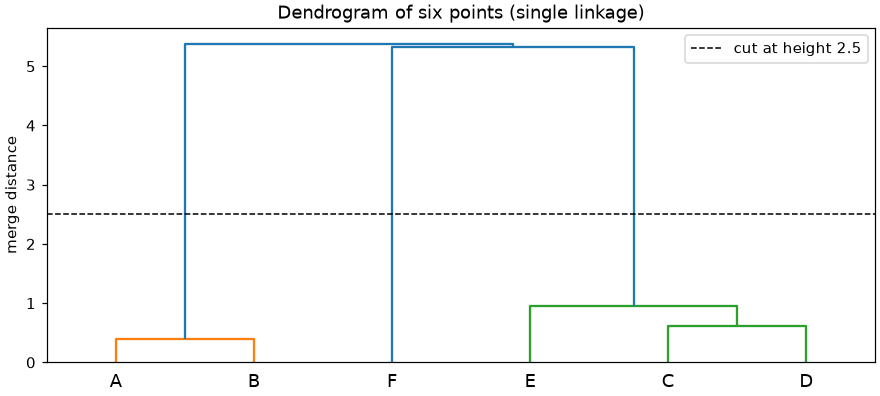
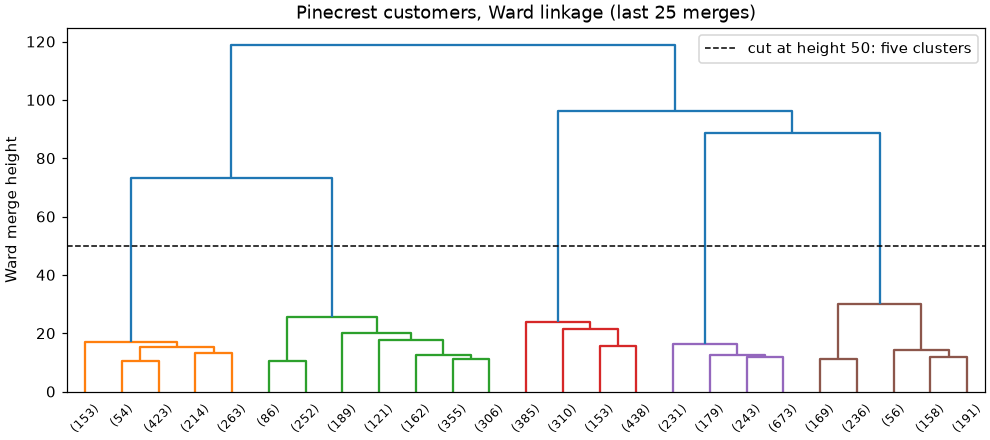
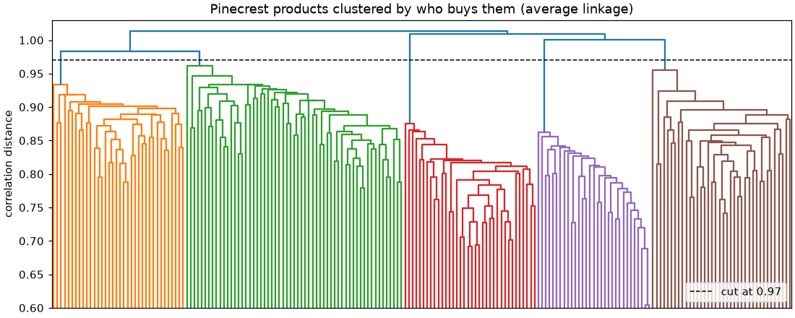

🌳 Lesson 8.3: Hierarchical Clustering
Instead of fixing the number of groups in advance, build a whole family tree of merges and decide afterwards where to cut it.
🎯 Learning Objectives
By the end of this lesson, you will be able to:
- Explain how agglomerative clustering builds a hierarchy by repeatedly merging the two closest groups
- Read a SciPy linkage matrix and a dendrogram, and cut the tree by number of clusters or by height
- Compare single, complete, average and Ward linkage and predict how each behaves on chains, blobs and outliers
- Use
AgglomerativeClusteringwith the rightmetricandlinkage, including non-Euclidean distances - Judge when hierarchical clustering beats K-Means, and when its cost rules it out
In This Lesson
🧭 A Family Tree of Groups
K-Means asks for k up front and returns one flat answer. But groups often nest. Pinecrest's catalog has climbing shoes and chalk bags, which belong together as "climbing"; climbing and hiking gear are both "mountain"; mountain and paddling gear are all "outdoor". Which level is right depends on the question: a store layout needs a few big sections, a recommendation engine wants small tight families. Hierarchical clustering gives you every level at once.
💡 Mental Model: Tidying the Gear Closet
Start with every item lying on its own. Find the two most similar items (two nearly identical headlamps) and put them in a box together. Now treat that box as one item and repeat: find the two closest things, items or boxes, and box them together. Keep going until everything is in one big box. Write down every merge and how far apart the two things were. That record is the hierarchy, and you can later open the boxes down to any level you like.
This bottom-up method is called agglomerative clustering, and it is what scikit-learn and SciPy implement. (The top-down alternative, divisive clustering, splits one big group again and again; it is rarely used in practice.) The loop is:
With n points there are always exactly n − 1 merges. The record of merges is drawn as a dendrogram (Greek for "tree drawing"): the leaves at the bottom are the points, and each merge is a horizontal bar drawn at the height of the merge distance. Cutting the tree with a horizontal line at some height gives a flat clustering: everything still connected below the line is one cluster.
🤔 Why This Matters
Three things make this family worth learning next to K-Means. You see the structure at every scale before committing to a number. You can use any distance, not just straight-line distance, which matters for things like purchase histories. And the result is deterministic: there is no random start, so no n_init and no local minima from bad luck. The price is speed, as you will see.
🔬 Six Points, Five Merges
Take six points small enough to follow by eye: a tight pair at the bottom left, a group of three in the middle, and a loner on the right.
import numpy as np
import pandas as pd
import matplotlib.pyplot as plt
from scipy.cluster.hierarchy import linkage, dendrogram, fcluster
points = np.array([[1.0, 1.0], [1.4, 1.0], [5.0, 5.0], [5.6, 5.1], [5.3, 6.0], [9.0, 1.0]])
names = ["A", "B", "C", "D", "E", "F"]
Z_tiny = linkage(points, method="single")
print(Z_tiny.round(3))Output
[[0. 1. 0.4 2. ]
[2. 3. 0.608 2. ]
[4. 7. 0.949 3. ]
[5. 8. 5.326 4. ]
[6. 9. 5.381 6. ]]That is SciPy's linkage matrix: one row per merge, in the order they happened. Each row holds the two clusters merged, the distance between them and the size of the new cluster. Original points are numbered 0 to 5; each new cluster gets the next number, starting at 6. Reading it:
- Row 1: points 0 and 1 (A and B), 0.4 apart, merge into cluster 6 with 2 points.
- Row 2: points 2 and 3 (C and D), 0.608 apart, become cluster 7.
- Row 3: point 4 (E) joins cluster 7, making cluster 8 with 3 points.
- Rows 4 and 5: the big jumps. The loner F joins the middle group at 5.326 (its nearest member there is D), and the A-B pair joins last at 5.381.
fig, ax = plt.subplots(figsize=(8, 3.6), layout="constrained")
dendrogram(Z_tiny, labels=names, ax=ax, color_threshold=2.5)
ax.axhline(2.5, color="black", linestyle="--", linewidth=1, label="cut at height 2.5")
ax.set_ylabel("merge distance")
ax.set_title("Dendrogram of six points (single linkage)")
ax.legend()
plt.show()
print(fcluster(Z_tiny, t=2.5, criterion="distance"))Output
[1 1 2 2 2 3]
fcluster turns a cut into labels: here every merge below height 2.5 is kept, which leaves three clusters, A-B, C-D-E and F. The long vertical gap between about 1 and 5 is the dendrogram telling you that three is a natural answer: any cut inside that gap gives the same three groups.
🔗 Linkage: Distance Between Groups
Distance between two points is clear. Distance between two groups is a choice, and that choice, the linkage, changes everything:
| Linkage | Distance between groups | Tends to |
|---|---|---|
| Single | The closest pair of points, one from each group | Follow chains and curved shapes; one bridge point can glue two groups together |
| Complete | The farthest pair of points | Make compact groups of similar diameter; sensitive to outliers |
| Average | The average over all pairs | A compromise between single and complete; works with any distance |
| Ward | How much the total within-cluster variance (the inertia of Lesson 8.1) would grow by merging | Make round groups of similar size, like K-Means; Euclidean distance only |
scikit-learn's AgglomerativeClustering runs the same algorithm with the estimator API you know. It needs either n_clusters or a cut height (next section). Compare the four linkages on two shapes from Lesson 8.1: two moons, and three blobs with very different spreads.
from sklearn.cluster import AgglomerativeClustering
from sklearn.datasets import make_moons, make_blobs
X_moons, _ = make_moons(n_samples=300, noise=0.05, random_state=42)
X_spread, _ = make_blobs(n_samples=300, centers=[[0, 0], [4, 0], [9, 0]],
cluster_std=[0.4, 0.4, 2.2], random_state=42)
fig, axes = plt.subplots(2, 4, figsize=(10, 5), layout="constrained")
for row, (data, k) in enumerate([(X_moons, 2), (X_spread, 3)]):
for col, link in enumerate(["single", "complete", "average", "ward"]):
labels_l = AgglomerativeClustering(n_clusters=k, linkage=link).fit_predict(data)
axes[row, col].scatter(data[:, 0], data[:, 1], c=labels_l, s=6, cmap="tab10", vmin=0, vmax=9)
axes[row, col].set_title(f"{link}\nsizes {sorted(np.bincount(labels_l).tolist())}", fontsize=10)
axes[row, col].set_xticks([])
axes[row, col].set_yticks([])
plt.show()![Grid of eight scatter plots. Top row, two moons: single linkage separates the two moons perfectly; complete, average and Ward cut across them. Bottom row, two tight blobs and one wide blob: single linkage puts almost everything in one cluster and splits off two stray points; complete linkage merges the two tight blobs and splits the wide one; average linkage merges the tight blobs and spends a cluster on two stray points; only Ward finds three blob-like groups, though it still gives some of the wide blob's edge to its tight neighbor.](images/clustering_hierarchical_linkages.png)
The titles show cluster sizes, which tell the story even without the colors. Single linkage is the only method that traces the moons, because it only needs one short hop between neighbors to keep a chain together. The same property ruins it on the blobs: the wide blob's scattered edge points form bridges, and single linkage ends up with one giant cluster plus a few stragglers. That failure has a name, chaining, and you will see it again in the project. The bottom row also shows the other linkages' weak spots: complete linkage cannot accept the wide blob's large diameter and splits it, average linkage spends a cluster on two far-out points, and only Ward, which thinks in terms of variance like K-Means, comes close to the three blobs (sizes 75, 100 and 125 instead of 100 each: the wide blob's edge still leaks to its neighbor, just as it did for K-Means in Lesson 8.1).
✅ A Sensible Default
For numeric features with Euclidean distance, start with Ward: it behaves like K-Means but gives you the tree. For other distances (cosine, correlation, Manhattan), Ward is not allowed, and average linkage is the usual choice. Reach for single linkage only when you expect long, thin, well-separated shapes, and expect it to fail on noisy data.
✂️ Cutting the Tree
You can turn the tree into flat clusters in two ways. Ask for a number of clusters (n_clusters=3, or SciPy's criterion="maxclust"), or ask for a height (distance_threshold, or criterion="distance") and let the number of clusters follow. The height is often more natural: "anything closer than this belongs together".
by_height = AgglomerativeClustering(n_clusters=None, distance_threshold=30, linkage="ward").fit(X_spread)
print("clusters below height 30:", by_height.n_clusters_)
heights = np.sort(by_height.distances_)[::-1][:6]
print("six highest merges:", heights.round(1))Output
clusters below height 30: 3
six highest merges: [78.2 47.6 24. 15.7 12.4 11.8]With a threshold, scikit-learn computes the full tree and stores every merge height in distances_ (with n_clusters set instead, pass compute_distances=True to get them). The highest merges are the ones to read. Here the top two are far above the rest, a big gap after which merges become cheap: the tree is saying "three groups". That gap is the hierarchical version of the elbow from Lesson 8.2, and a cut anywhere inside it gives the same answer.
💡 The Units of Height
A merge height is in the units of the linkage. For single, complete and average linkage it is a distance between points, so with standardized data a height of 2 means "two standard deviations". Ward heights are on a different scale (they grow with the size of the groups merged), so compare Ward heights only with other Ward heights from the same data.
👥 Pinecrest Customers: Ward vs K-Means
Run hierarchical clustering on the same customer features as Lesson 8.2 (log of orders and order value, then everything standardized) and see whether it tells the same story.
from sklearn.cluster import KMeans
from sklearn.compose import ColumnTransformer
from sklearn.pipeline import make_pipeline
from sklearn.preprocessing import FunctionTransformer, StandardScaler
customers = pd.read_csv("data/customers_churn.csv")
behavior = ["orders_12m", "avg_order_value", "discount_share", "return_rate"]
log_some = ColumnTransformer(
[("log", FunctionTransformer(np.log, feature_names_out="one-to-one"), ["orders_12m", "avg_order_value"])],
remainder="passthrough", verbose_feature_names_out=False,
)
Z = make_pipeline(log_some, StandardScaler()).set_output(transform="pandas").fit_transform(customers[behavior])
Z_ward = linkage(Z, method="ward")
print("eight highest merges:", Z_ward[-8:, 2][::-1].round(1))Output
eight highest merges: [118.8 96.1 88.7 73.1 30.2 25.6 23.7 21.3]Read from the top: the four highest merges are far above the fifth. Undo those four merges and you have five clusters; after that, each further split buys much less. A truncated dendrogram shows it (6,000 leaves would be a black smear, so truncate_mode="lastp" draws only the last 25 merged groups, with their sizes in brackets):
fig, ax = plt.subplots(figsize=(9, 4), layout="constrained")
dendrogram(Z_ward, truncate_mode="lastp", p=25, ax=ax, color_threshold=50, leaf_font_size=8)
ax.axhline(50, color="black", linestyle="--", linewidth=1, label="cut at height 50: five clusters")
ax.set_ylabel("Ward merge height")
ax.set_title("Pinecrest customers, Ward linkage (last 25 merges)")
ax.legend()
plt.show()
Now compare the five Ward clusters with K-Means. scikit-learn's version gives labels directly; the adjusted Rand index from Lesson 8.2 measures agreement while ignoring cluster numbers.
from sklearn.metrics import adjusted_rand_score, silhouette_score
ward5 = AgglomerativeClustering(n_clusters=5, linkage="ward").fit(Z)
km5 = KMeans(n_clusters=5, n_init=10, random_state=42).fit(Z)
print("Ward sizes :", sorted(np.bincount(ward5.labels_).tolist()))
print("K-Means sizes:", sorted(np.bincount(km5.labels_).tolist()))
print(f"agreement (ARI): {adjusted_rand_score(km5.labels_, ward5.labels_):.3f}")
print(f"silhouette Ward {silhouette_score(Z, ward5.labels_):.3f} K-Means {silhouette_score(Z, km5.labels_):.3f}")Output
Ward sizes : [810, 1107, 1286, 1326, 1471]
K-Means sizes: [811, 1113, 1253, 1374, 1449]
agreement (ARI): 0.907
silhouette Ward 0.469 K-Means 0.479Two algorithms with different ideas (minimize inertia from random starts, versus merge greedily with no randomness) find nearly the same five groups. That is strong evidence the segments are real structure, not an artifact of one method. K-Means scores a slightly higher silhouette because it directly optimizes tightness around centers, while Ward's greedy merges can never be undone.
⚠️ The Cost: Every Pair of Points
Agglomerative clustering needs the distance between every pair of points: for 6,000 customers that is 18 million distances (about 144 MB as floats), and time that grows at least with the square of n. At 100,000 rows it is 5 billion distances, more memory than most laptops have. Practical recipes for big data: cluster a random sample and assign the rest to the nearest cluster center, or run K-Means with a few hundred clusters first and build the tree on those centers.
📐 Beyond Straight-Line Distance
K-Means is tied to squared Euclidean distance, because its update step uses the mean. Agglomerative clustering never computes a mean (except with Ward), so it works with any distance through the metric parameter: "manhattan", "cosine", or a precomputed distance matrix (metric="precomputed"). SciPy's linkage accepts even more, such as "correlation" and "jaccard".
Why would you want that? Think about products described by who bought them: a row per product, a column per customer, 1 if that customer bought it. Popular products have many 1s and rare ones few, so the Euclidean distance between two products mostly measures how popular they are, not whether the same people buy them. A correlation distance asks the right question: when one product is bought, does the other tend to be bought too?
from scipy.spatial.distance import pdist
rows = np.array([[1, 1, 1, 1, 0, 0, 0, 0, 0, 0], # popular tent: 4 buyers
[1, 1, 0, 0, 0, 0, 0, 0, 0, 0], # niche tent, bought by the same kind of people
[0, 0, 0, 0, 1, 1, 1, 1, 0, 0]]) # popular paddle: 4 different buyers
print("euclidean :", pdist(rows, metric="euclidean").round(2))
print("correlation:", pdist(rows, metric="correlation").round(2))Output
euclidean : [1.41 2.83 2.45]
correlation: [0.39 1.67 1.41]The three numbers are the pairs (tent, niche tent), (tent, paddle) and (niche tent, paddle). By Euclidean distance the niche tent is 1.41 from the tent and 2.45 from the paddle: the numbers mostly count how many 1s differ, so they reflect popularity as much as taste. By correlation distance the two tents are close (0.39) and both are far from the paddle (1.67 and 1.41, above 1, meaning negatively correlated: people who buy one tend not to buy the other). Correlation distance is 1 minus the correlation, so it runs from 0 (always bought together) through 1 (unrelated) to 2 (never bought together). The project uses it on the real catalog.
⚠️ Common Mistakes
Older tutorials use parameter names that no longer exist. These are the errors you will meet.
1. The Old affinity Parameter
AgglomerativeClustering(n_clusters=5, affinity="cosine", linkage="average").fit(Z)Error
TypeError: AgglomerativeClustering.__init__() got an unexpected keyword argument 'affinity'What it means: the parameter was renamed to metric and the old name has been removed. Fix: AgglomerativeClustering(n_clusters=5, metric="cosine", linkage="average").
2. Ward with a Non-Euclidean Distance
AgglomerativeClustering(n_clusters=5, metric="cosine", linkage="ward").fit(Z)Error
ValueError: cosine was provided as metric. Ward can only work with euclidean distances (i.e. 'euclidean' and 'l2').What it means: Ward merges by increase in variance, which is defined only for Euclidean distance. Fix: keep Euclidean with Ward, or switch to linkage="average" (or "complete") for other metrics.
3. Both a Number of Clusters and a Cut Height
AgglomerativeClustering(n_clusters=5, distance_threshold=50).fit(Z)Error
ValueError: Exactly one of n_clusters and distance_threshold has to be set, and the other needs to be None.What it means: the two ways of cutting the tree conflict, and the default n_clusters=2 counts as set. Fix: pass n_clusters=None together with distance_threshold.
4. Expecting a predict Method
ward5.predict(Z.head(3))Error
AttributeError: 'AgglomerativeClustering' object has no attribute 'predict'What it means: the tree is built from the training points only; there is no rule for where a new point would have been merged. Fix: use fit_predict on the data you have. To assign new rows, compute each cluster's mean and assign to the nearest one (Exercise 3), or train a classifier such as k-nearest neighbors on the cluster labels.
5. Trusting Single Linkage on Noisy Data
single5 = AgglomerativeClustering(n_clusters=5, linkage="single").fit(Z)
print("single linkage sizes:", sorted(np.bincount(single5.labels_).tolist()))Output (no error, and that is the problem)
single linkage sizes: [1, 1, 1, 392, 5605]What happened: customers fill the space between segments, so a chain of close neighbors links almost everyone into one cluster, and the other "clusters" are single outliers. The code ran fine. Fix: always print cluster sizes. On data without clear gaps, use Ward or average linkage.
🛠️ Project: A Product Family Tree
Pinecrest's merchandising team wants to know which products "belong together" in customers' eyes, to plan store sections and bundles. The best evidence is purchase behavior: products bought by the same people are related, whatever their category label says. You will build a product × customer purchase matrix, cluster the 200 products with average linkage and correlation distance, read the dendrogram, and check the families against each product's primary_activity, a column the clustering never sees. Start a fresh notebook, lesson_8_3_project. Allow about 40 minutes.
🛠️ Step 1: Build the product × customer matrix (5 min)
Each row of interactions.csv is one customer-product pair. pd.crosstab turns it into a table with one row per product and one column per customer; clip(upper=1) turns counts into "bought or not".
import numpy as np
import pandas as pd
import matplotlib.pyplot as plt
from scipy.cluster.hierarchy import linkage, dendrogram, fcluster
interactions = pd.read_csv("data/interactions.csv")
products = pd.read_csv("data/products_ml.csv").set_index("product_id")
bought = pd.crosstab(interactions["product_id"], interactions["customer_id"]).clip(upper=1)
products = products.loc[bought.index] # same row order as the matrix
print(bought.shape)
print(f"share of cells that are 1: {bought.to_numpy().mean():.3f}")
print(bought.sum(axis=1).describe().round(1))Output
(200, 3000)
share of cells that are 1: 0.054
count 200.0
mean 160.9
std 135.7
min 19.0
25% 85.8
50% 120.0
75% 180.0
max 992.0
dtype: float64200 products, 3,000 customers, and only about 5% of cells filled. Popularity ranges widely (look at the minimum and maximum buyers per product): exactly the situation where correlation distance beats Euclidean.
🛠️ Step 2: Build the tree (5 min)
SciPy computes the correlation distance between every pair of products and merges with average linkage.
Z_products = linkage(bought.to_numpy(), method="average", metric="correlation")
print("merges:", len(Z_products))
print("six highest merge heights:", Z_products[-6:, 2][::-1].round(3))Output
merges: 199
six highest merge heights: [1.014 1.01 1. 0.983 0.962 0.955]199 merges for 200 products. The top heights are all near 1: at the top level, the product families are uncorrelated with each other (each family is bought by its own kind of customer).
🛠️ Step 3: Draw the dendrogram (10 min)
200 labeled leaves are too many to read, so hide the labels and color the subtrees below a cut height of 0.97.
fig, ax = plt.subplots(figsize=(10, 4), layout="constrained")
dendrogram(Z_products, no_labels=True, color_threshold=0.97, ax=ax)
ax.axhline(0.97, color="black", linestyle="--", linewidth=1, label="cut at 0.97")
ax.set_ylim(0.6, 1.03)
ax.set_ylabel("correlation distance")
ax.set_title("Pinecrest products clustered by who buys them (average linkage)")
ax.legend(loc="lower right")
plt.show()
🛠️ Step 4: Cut into families and check them (10 min)
Cut at the same height, then compare the families with primary_activity, which the clustering never saw.
products["family"] = fcluster(Z_products, t=0.97, criterion="distance")
print(products["family"].value_counts().sort_index())
print(pd.crosstab(products["family"], products["primary_activity"]))Output
family
1 36
2 59
3 36
4 31
5 38
Name: count, dtype: int64
primary_activity camping climbing general hiking paddling running
family
1 0 0 5 31 0 0
2 46 0 13 0 0 0
3 0 36 0 0 0 0
4 0 0 0 0 0 31
5 0 0 3 0 35 0Purchase behavior alone recovered the activities: one family each for climbing, running, paddling and hiking, plus a camping family. The "general" products (headlamps, bottles and the like, for no single activity) are spread over the families of the people who buy them most, which is more useful for bundling than their catalog label.
🛠️ Step 5: Watch single linkage chain (5 min)
Same distances, single linkage, cut into five clusters by number:
from sklearn.metrics import adjusted_rand_score
Z_single = linkage(bought.to_numpy(), method="single", metric="correlation")
single_families = fcluster(Z_single, t=5, criterion="maxclust")
print("single linkage sizes :", np.bincount(single_families)[1:])
print(f"ARI with activity, average linkage: {adjusted_rand_score(products['primary_activity'], products['family']):.3f}")
print(f"ARI with activity, single linkage : {adjusted_rand_score(products['primary_activity'], single_families):.3f}")Output
single linkage sizes : [ 36 161 1 1 1]
ARI with activity, average linkage: 0.840
ARI with activity, single linkage : 0.162Single linkage keeps one family apart and chains nearly everything else together, leaving three one-product "clusters". The ARI against the activities collapses. Same data, same distance: the linkage made the difference.
🛠️ Step 6: Name the families and save (5 min)
Name each family after its most common activity, then save the result for the merchandising team.
family_names = (products.groupby("family")["primary_activity"]
.agg(lambda s: s.value_counts().index[0]).str.title() + " family")
products["family_name"] = products["family"].map(family_names)
products[["name", "category", "family_name"]].to_csv("product_families.csv")
print(products.groupby("family_name")["category"].agg(lambda s: ", ".join(s.value_counts().index[:3])))Output
family_name
Camping family Camp Kitchen, Sleeping, Accessories
Climbing family Climbing, Apparel, Footwear
Hiking family Footwear, Packs, Accessories
Paddling family Paddling, Apparel, Footwear
Running family Running, Apparel, Footwear
Name: category, dtype: strEach family mixes several catalog categories (apparel and footwear turn up everywhere), which is exactly the point: a "Paddling family" section could put paddling apparel next to the boats, because those are the things the same people buy.
✅ Project Completion Checklist
- Your purchase matrix has 200 product rows and 3,000 customer columns of 0s and 1s
- You built the tree with average linkage and correlation distance, and can explain why not Euclidean
- Your dendrogram shows five colored families below the cut at 0.97
- The crosstab shows each family dominated by one activity, which the clustering never saw
- You showed single linkage chaining, with sizes and ARI as evidence
product_families.csvlists every product with its family name
🏋️ Hands-on Exercises
Exercise 1 is pencil-and-code; the others continue in the project notebook, and Exercise 3 reuses Z and ward5 from the lesson (rerun the customer section's code if you are in a fresh notebook).
🏋️ Exercise 1: Three Linkages by Hand
Group G1 holds the points 1 and 2 on a number line; group G2 holds 6 and 10. Before running anything, work out the single, complete and average linkage distances between the groups. Then check with scipy.spatial.distance.cdist.
💡 Hint
List the four cross-group pairs: (1, 6), (1, 10), (2, 6), (2, 10). Single takes the smallest, complete the largest, average the mean.
✅ Solution
from scipy.spatial.distance import cdist
pair_d = cdist([[1], [2]], [[6], [10]])
print(pair_d)
print("single:", pair_d.min(), " complete:", pair_d.max(), " average:", pair_d.mean())Output
[[5. 9.]
[4. 8.]]
single: 4.0 complete: 9.0 average: 6.5Single linkage sees only the nearest pair (4), complete only the farthest (9), and average all four (6.5). A single far-out point like 10 moves complete linkage a lot and single linkage not at all, which is why complete linkage is sensitive to outliers.
🏋️ Exercise 2: Families at Different Heights
Cut Z_products at heights 0.90, 0.95, 0.97 and 1.0 and print how many families each cut gives and the size of the largest. Which range of heights gives five families? What happens below it?
💡 Hint
fcluster(Z_products, t=h, criterion="distance"), then len(np.unique(...)) and np.bincount(...).max().
✅ Solution
for h in [0.90, 0.95, 0.97, 1.0]:
cut = fcluster(Z_products, t=h, criterion="distance")
print(f"height {h:.2f}: {len(np.unique(cut)):3d} families, largest {np.bincount(cut).max()}")Output
height 0.90: 34 families, largest 36
height 0.95: 7 families, largest 58
height 0.97: 5 families, largest 59
height 1.00: 4 families, largest 95Low cuts break the families into many small pieces (tight sub-families such as products bought by the same few dozen customers). The stretch of heights giving five families is the "gap" in the dendrogram; above it, families merge into big, meaningless groups. A height inside the widest gap is the most robust cut.
🏋️ Exercise 3: Assigning New Customers
AgglomerativeClustering has no predict. Build one: compute the mean of Z for each of ward5's clusters, then assign rows to the nearest mean with pairwise_distances_argmin from sklearn.metrics. How many of the 6,000 customers would be assigned to a different cluster than Ward gave them?
💡 Hint
Z.groupby(ward5.labels_).mean() gives one row per cluster, in label order.
✅ Solution
from sklearn.metrics import pairwise_distances_argmin
ward_means = Z.groupby(ward5.labels_).mean()
nearest = pairwise_distances_argmin(Z, ward_means)
print(f"customers whose nearest mean is not their Ward cluster: {(nearest != ward5.labels_).sum()}")Output
customers whose nearest mean is not their Ward cluster: 190A couple of hundred customers sit closer to another cluster's mean than to their own. Ward's greedy merges, once made, are never revisited, so some border points end up on the "wrong" side. Running one round of K-Means from the Ward means would move them, and K-Means initialized from a hierarchical clustering is a classic combination.
🏋️ Exercise 4: Which Linkage Keeps the Distances? (Stretch)
The cophenetic distance between two points is the height at which they first end up in the same cluster. A good tree keeps the original distances: the cophenetic correlation between the original and the cophenetic distances is close to 1. Compute it with scipy.cluster.hierarchy.cophenet(Z_tree, original_distances) for single, complete and average linkage on the products (correlation distance). Which linkage preserves the distances best?
💡 Hint
Compute d = pdist(bought.to_numpy(), metric="correlation") once; linkage also accepts this condensed distance array directly. cophenet returns a pair: the correlation and the distances.
✅ Solution
from scipy.cluster.hierarchy import cophenet
from scipy.spatial.distance import pdist
d = pdist(bought.to_numpy(), metric="correlation")
for method in ["single", "complete", "average"]:
coph_corr, _ = cophenet(linkage(d, method=method), d)
print(f"{method:8s} cophenetic correlation {coph_corr:.3f}")Output
single cophenetic correlation 0.784
complete cophenetic correlation 0.810
average cophenetic correlation 0.904Average linkage preserves the original distances best, which is a known property: it is, by construction, the merge rule closest to "keep the average distance". This is another reason it is the standard choice for non-Euclidean distances. The cophenetic correlation tells you how faithful the tree is, not whether its clusters are useful, so it complements rather than replaces the activity check.
🎯 Quick Quiz
🎯 Check Your Understanding
Question 1: What does this print?
quiz_Z = linkage([[0.0], [1.0], [5.0], [6.0], [20.0]], method="single")
print(len(quiz_Z), quiz_Z[-1, 3])Question 2: Two groups of customers are separated by a thin trail of in-between customers. Which linkage is most likely to merge the two groups too early?
Question 3: You want to cluster products using cosine distance on purchase vectors. Which call works?
Question 4: In a dendrogram, the top three merges happen at heights 95, 88 and 73, and every merge below them is under 31. How many clusters does the tree suggest?
Question 5: When is K-Means a better choice than agglomerative clustering?
❓ Common Questions at This Stage
SciPy or scikit-learn: which should I use?
Both run the same algorithm. SciPy's linkage gives you the full linkage matrix, dendrograms, fcluster, cophenet and more metrics, so it is best for exploring the tree. scikit-learn's AgglomerativeClustering fits into pipelines and the estimator API, and supports connectivity constraints. A common workflow: explore with SciPy, then put the chosen setting into scikit-learn.
Do I need to scale features first?
Yes, for exactly the same reason as with K-Means: the distances are computed from your columns, so a column in dollars would drown out a column of counts. The project did not scale because all its columns are the same kind of 0/1 purchase flag, and correlation distance standardizes each row anyway.
Is the result random? Do I need random_state?
No. Given the same data, agglomerative clustering always makes the same merges, so there is no random_state parameter. The only source of variation is exact ties between distances, which are rare with real-valued data.
What are connectivity constraints?
An optional graph that says which points are allowed to merge directly, for example only neighboring pixels in an image or neighboring stores on a map. Pass it as connectivity=, often built with sklearn.neighbors.kneighbors_graph. It makes clusters spatially connected and speeds the algorithm up on large data.
🌟 Going Further: Bonus Challenge
Cluster the customers by what they buy rather than how they shop: build the customer × product matrix (the transpose of the project's), take a random sample of 1,500 customers to keep it fast, and cluster with average linkage and correlation distance (or cosine). Cut into a handful of groups and describe each by its most-bought product families from the project. Then cross-tabulate your purchase-based customer groups with the behavior segments from Lesson 8.2 (customer_segments.csv). Do "what they buy" and "how they shop" describe the same people?
📓 Learning Journal
Take five minutes to write in your learning journal (the journal.md file you started in Lesson 0.1, or a paper notebook). Jot down:
- Key concepts you learned today
- Techniques that clicked (and the ones that have not, yet)
- Questions or confusion to come back to
- Ideas to try on your own
- Progress and feelings: how did this lesson go for you?
✍️ This lesson's prompt: Draw (on paper) the dendrogram of five things you own, merged by how similar they are, and mark where you would cut it for two different purposes. Then write two sentences on why correlation distance found the product families when Euclidean distance would have mostly measured popularity.
📝 Lesson Summary
🎓 Key Takeaways
- Agglomerative clustering starts with every point alone and merges the two closest clusters, n − 1 times, recording each merge height
- The dendrogram shows every level of grouping; a horizontal cut gives flat clusters, and a large vertical gap suggests a natural number of clusters
- Linkage defines distance between groups: single (closest pair, chains), complete (farthest pair, compact), average (mean of pairs, any metric), Ward (variance increase, Euclidean only)
- Unlike K-Means it accepts any distance, has no random start, and needs no k in advance; it has no
predictand costs O(n²) memory - Use
metric=(not the removedaffinity=), andn_clusters=Nonewithdistance_threshold - Validate clusters with something they never saw: on Pinecrest customers, Ward and K-Means agreed closely; on products, purchase families matched the activities
🏆 What You've Accomplished
- You traced a linkage matrix merge by merge and drew its dendrogram
- You compared four linkages and saw single linkage chain on two different datasets
- You confirmed the five customer segments with a second, unrelated algorithm
- You built a product family tree from purchases alone and showed it recovers each product's activity
🔭 Looking Ahead
In Lesson 8.4: Density-Based Clustering you will meet algorithms that define a cluster as a dense region separated by sparse space. DBSCAN, OPTICS and HDBSCAN find clusters of any shape, including the moons that defeated K-Means, and they label points in sparse regions as noise instead of forcing them into a cluster.
📋 Before the Next Lesson
- Keep
product_families.csv; it is a nice input for the recommendation lesson (11.2). - Rerun the linkage comparison with
make_moons(noise=0.12). At what noise level does single linkage stop separating the moons? - Write one sentence each: when would you pick K-Means, Ward and average linkage with a custom distance?
🌱 Encouragement for the Journey
You now have two clustering families in your toolkit, and you used one to check the other: that cross-checking habit is what makes unsupervised results trustworthy. You also discovered something real about Pinecrest's customers, that people buy by activity rather than by catalog category, using nothing but who bought what. Not every tree will be this clean, and when one is not, you now know how to read why.